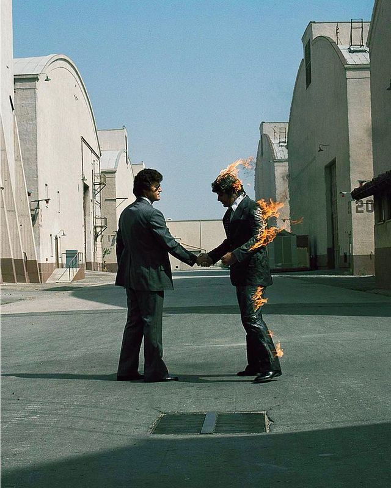

Hi, I'm Fauzan Ridani — I build things that run themselves.
I'm a developer focused on automation, AI integration, and practical tooling — turning repetitive, manual work into scripts and systems that just work.

Profile & journey
I'm a developer focused on automation and AI integration — turning repetitive, manual work into scripts and systems that run on their own. From scraping hundreds of visual assets with Selenium, to manipulating the Android environment through Termux, to wiring a Discord bot into the Gemini API, I'd rather solve a real problem than just collect tools.
Most of what I know comes from hands-on experimentation — trying, breaking, and fixing until a script actually holds up. I care less about listing technologies and more about whether a project does something useful: saving time, automating a repetitive task, or unlocking a new capability on the devices I use every day.
Discord AI Assistant
Built and deployed an interactive bot using Discord Slash Commands and Google Gemini AI.
AI Visual Engineering
Explored prompt engineering to produce cinematic 3D animation-style visuals.
Android System Modding
Combined Termux and wireless ADB access to unlock deeper file-system control on Android.
Scraping Automation
Designed automated asset-extraction scripts for games using browser automation.
Math Speed Analyzer
Built a Python tool to track and visualize calculation speed and accuracy over time.
Java Fundamentals
Practiced core Java syntax and object-oriented programming principles.
HTML Fundamentals
Learned semantic HTML structure, forms, and foundational CSS styling.
Selected projects
A few things I've built recently — click any card for the full story.
What people say
P.'s work on the Discord bot integration was flawless — the way they handled API rate limits showed real backend maturity.
The web scraping project stood out. Using Selenium to handle lazy-loading across hundreds of assets without breaking is genuinely impressive.
Let's work together
Have a project in mind or just want to say hi? My inbox is open.
Download CV